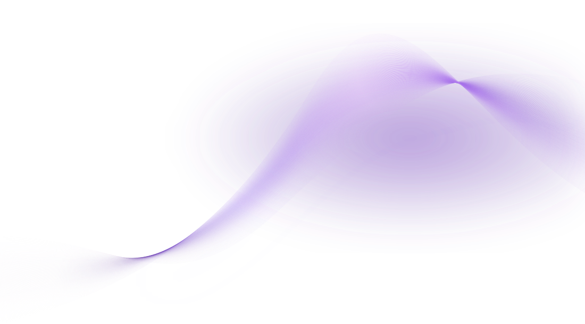
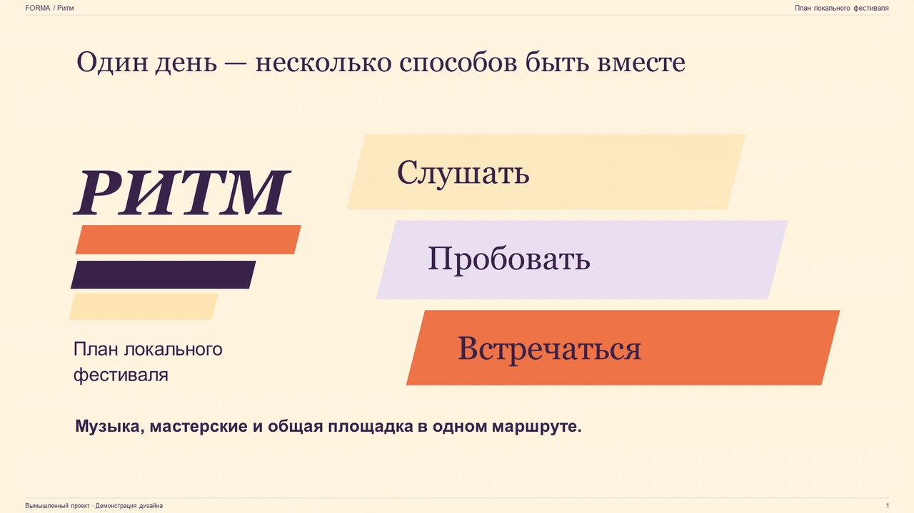

Студия PowerPoint
Презентации для учёбы, проектов и выступлений
Редактируемый PowerPoint или слайды-изображения. Стоимость и срок согласуем до начала работы.

Примеры презентаций
Демонстрационные работы FORMA
В этом формате пока нет опубликованных работ.
Два формата на выбор
Форматы: в чём разница?
В обоих форматах вы получите PPTX. PDF добавим по запросу.
Как проходит работа
Обсудить презентацию
Частые вопросы
Можно ли внести правки?
Да. Количество и объём правок согласуем до начала работы. В редактируемой презентации вы сможете изменить текст и основные элементы самостоятельно.
В каком формате будет презентация?
PowerPoint (.pptx). PDF доступен по согласованию. В визуальном варианте содержимое каждого слайда — одно изображение; в редактируемом — отдельные объекты там, где это возможно.
Что с формулами и научными данными?
Лучше предоставить проверенные материалы и источники. Формулы, подписи и числовые данные требуют отдельной проверки; объём предметной вычитки согласуем заранее.
Сколько времени займёт работа?
Зависит от количества слайдов, готовности исходников, сложности дизайна и правок. Назовите желаемый срок в брифе — уточним возможность выполнения.
Как происходит оплата?
Способ и этапы оплаты обсуждаются индивидуально до начала работы. Заполнение брифа бесплатно и не является подтверждённым заказом.